Last updated: 2020-10-23
Checks: 6 1
Knit directory: ebpmf_data_analysis/
This reproducible R Markdown analysis was created with workflowr (version 1.6.2). The Checks tab describes the reproducibility checks that were applied when the results were created. The Past versions tab lists the development history.
Great! Since the R Markdown file has been committed to the Git repository, you know the exact version of the code that produced these results.
Great job! The global environment was empty. Objects defined in the global environment can affect the analysis in your R Markdown file in unknown ways. For reproduciblity it’s best to always run the code in an empty environment.
The command set.seed(20200511) was run prior to running the code in the R Markdown file. Setting a seed ensures that any results that rely on randomness, e.g. subsampling or permutations, are reproducible.
Great job! Recording the operating system, R version, and package versions is critical for reproducibility.
To ensure reproducibility of the results, delete the cache directory ebpmf_wbg_simulation_cache and re-run the analysis. To have workflowr automatically delete the cache directory prior to building the file, set delete_cache = TRUE when running wflow_build() or wflow_publish().
Great job! Using relative paths to the files within your workflowr project makes it easier to run your code on other machines.
Great! You are using Git for version control. Tracking code development and connecting the code version to the results is critical for reproducibility.
The results in this page were generated with repository version 5dfc5b8. See the Past versions tab to see a history of the changes made to the R Markdown and HTML files.
Note that you need to be careful to ensure that all relevant files for the analysis have been committed to Git prior to generating the results (you can use wflow_publish or wflow_git_commit). workflowr only checks the R Markdown file, but you know if there are other scripts or data files that it depends on. Below is the status of the Git repository when the results were generated:
Ignored files:
Ignored: .DS_Store
Ignored: .Rhistory
Ignored: .Rproj.user/
Ignored: analysis/ebpmf_bg_tutorial_cache/
Ignored: analysis/ebpmf_wbg_model_intro_cache/
Ignored: analysis/ebpmf_wbg_simulation_cache/
Ignored: analysis/investigate_np_ebpmf_wbg_cache/
Ignored: analysis/pmf_greedy_experiment_cache/
Ignored: analysis/sla_data_analysis_k10_cache/
Ignored: data/.DS_Store
Ignored: output/.DS_Store
Ignored: topicView-app/.DS_Store
Untracked files:
Untracked: analysis/draft.Rmd
Untracked: analysis/heatmap.Rmd
Untracked: analysis/investigate_largeK.Rmd
Untracked: analysis/investigate_news_topics.Rmd
Untracked: analysis/summary_sla_news_nips.Rmd
Untracked: analysis/test.R
Untracked: code/init.R
Untracked: script/Rplots.pdf
Untracked: script/save_volcano_plot.R
Untracked: topicView-app/app_utils.R
Untracked: topicView-app/data/
Untracked: topicView-app/output/
Untracked: topicView-app/rsconnect/
Unstaged changes:
Deleted: analysis/sla_data_analysis_k10.Rmd
Deleted: analysis/sla_data_analysis_k5.Rmd
Deleted: analysis/sla_data_analysis_k50.Rmd
Modified: code/misc.R
Modified: code/plots.R
Modified: code/util.R
Deleted: data/SLA/SCC2016/Code/APL/compCM.m
Deleted: data/SLA/SCC2016/Code/APL/compMuI.m
Deleted: data/SLA/SCC2016/Code/APL/compParamErr2.m
Deleted: data/SLA/SCC2016/Code/APL/cpl4c.m
Deleted: data/SLA/SCC2016/Code/APL/cplEstimParam.m
Deleted: data/SLA/SCC2016/Code/APL/cpl_basic_demo_PJ.m
Deleted: data/SLA/SCC2016/Code/APL/cpl_demo.m
Deleted: data/SLA/SCC2016/Code/APL/cpl_demo2a.m
Deleted: data/SLA/SCC2016/Code/APL/dcBlkMod.m
Deleted: data/SLA/SCC2016/Code/APL/dcBlkMod2.m
Deleted: data/SLA/SCC2016/Code/APL/dcBlkMod3.m
Deleted: data/SLA/SCC2016/Code/APL/dcbm_nmi_beta_D.m
Deleted: data/SLA/SCC2016/Code/APL/dcbm_nmi_lambda_D.m
Deleted: data/SLA/SCC2016/Code/APL/dcbm_time_vs_n_D.m
Deleted: data/SLA/SCC2016/Code/APL/genDCBlkMod.c
Deleted: data/SLA/SCC2016/Code/APL/genDCBlkMod.mexa64
Deleted: data/SLA/SCC2016/Code/APL/genDCBlkMod2.m
Deleted: data/SLA/SCC2016/Code/APL/initLabel5b.m
Deleted: data/SLA/SCC2016/Code/BCPL/ProfileLike.m
Deleted: data/SLA/SCC2016/Code/BCPL/calCri1.m
Deleted: data/SLA/SCC2016/Code/BCPL/calCri2.m
Deleted: data/SLA/SCC2016/Code/BCPL/mutiExp.m
Deleted: data/SLA/SCC2016/Code/MatlabCode.m
Deleted: data/SLA/SCC2016/Code/NewmanSM/NewmanSM.m
Deleted: data/SLA/SCC2016/Code/coauthorThresh2GiantAdj.txt
Deleted: data/SLA/SCC2016/Code/coauthorThresh2GiantCommLabelK2Matlab.txt
Deleted: data/SLA/SCC2016/Code/functions.R
Deleted: data/SLA/SCC2016/Code/main.R
Deleted: data/SLA/SCC2016/Data/authorList.txt
Deleted: data/SLA/SCC2016/Data/authorPaperBiadj.txt
Deleted: data/SLA/SCC2016/Data/paperCitAdj.txt
Deleted: data/SLA/SCC2016/Data/paperList.txt
Deleted: data/SLA/SCC2016/ReadMe.txt
Deleted: data/uci_BoW.sh
Deleted: data/uci_BoW/docword.kos.txt
Deleted: data/uci_BoW/readme.txt
Deleted: data/uci_BoW/vocab.kos.txt
Deleted: output/uci_BoW/v0.3.8/fit_kos_ebpmf_bg_K20_maxiter_1000.Rout
Deleted: output/uci_BoW/v0.3.8/fit_kos_ebpmf_bg_K20_maxiter_500.Rout
Deleted: output/uci_BoW/v0.3.8/fit_kos_ebpmf_bg_K20_maxiter_5000.Rout
Deleted: output/uci_BoW/v0.3.8/kos_ebpmf_bg_K20_maxiter1000.Rds
Deleted: output/uci_BoW/v0.3.8/kos_ebpmf_bg_K20_maxiter500.Rds
Deleted: output/uci_BoW/v0.3.8/kos_ebpmf_bg_K20_maxiter5000.Rds
Deleted: output/uci_BoW/v0.3.8/kos_ebpmf_bg_K2_maxiter10.Rds
Deleted: output/uci_BoW/v0.3.9/fit_kos_ebpmf_bg_K100_maxiter_5000.Rout
Deleted: output/uci_BoW/v0.3.9/fit_kos_ebpmf_bg_K20_maxiter_5000.Rout
Deleted: output/uci_BoW/v0.3.9/fit_kos_ebpmf_bg_K50_maxiter_5000.Rout
Deleted: output/uci_BoW/v0.3.9/fit_kos_ebpmf_bg_initLF_K100_maxiter_5000.Rout
Deleted: output/uci_BoW/v0.3.9/fit_kos_ebpmf_bg_initLF_K20_maxiter_5000.Rout
Deleted: output/uci_BoW/v0.3.9/fit_kos_ebpmf_bg_initLF_K300_maxiter_1000.Rout
Deleted: output/uci_BoW/v0.3.9/fit_kos_ebpmf_bg_initLF_K500_maxiter_1000.Rout
Deleted: output/uci_BoW/v0.3.9/fit_kos_ebpmf_bg_initLF_K50_maxiter_5000.Rout
Deleted: output/uci_BoW/v0.3.9/fit_kos_pmf_initLF_K100_maxiter_5000.Rout
Deleted: output/uci_BoW/v0.3.9/fit_kos_pmf_initLF_K20_maxiter_5000.Rout
Deleted: output/uci_BoW/v0.3.9/fit_kos_pmf_initLF_K300_maxiter_1000.Rout
Deleted: output/uci_BoW/v0.3.9/fit_kos_pmf_initLF_K500_maxiter_5000.Rout
Deleted: output/uci_BoW/v0.3.9/fit_kos_pmf_initLF_K50_maxiter_5000.Rout
Deleted: output/uci_BoW/v0.3.9/kos_ebpmf_bg_K100_maxiter1000.Rds
Deleted: output/uci_BoW/v0.3.9/kos_ebpmf_bg_K100_maxiter1500.Rds
Deleted: output/uci_BoW/v0.3.9/kos_ebpmf_bg_K100_maxiter2000.Rds
Deleted: output/uci_BoW/v0.3.9/kos_ebpmf_bg_K100_maxiter500.Rds
Deleted: output/uci_BoW/v0.3.9/kos_ebpmf_bg_K20_maxiter1000.Rds
Deleted: output/uci_BoW/v0.3.9/kos_ebpmf_bg_K20_maxiter1500.Rds
Deleted: output/uci_BoW/v0.3.9/kos_ebpmf_bg_K20_maxiter2000.Rds
Deleted: output/uci_BoW/v0.3.9/kos_ebpmf_bg_K20_maxiter2500.Rds
Deleted: output/uci_BoW/v0.3.9/kos_ebpmf_bg_K20_maxiter3000.Rds
Deleted: output/uci_BoW/v0.3.9/kos_ebpmf_bg_K20_maxiter3500.Rds
Deleted: output/uci_BoW/v0.3.9/kos_ebpmf_bg_K20_maxiter4000.Rds
Deleted: output/uci_BoW/v0.3.9/kos_ebpmf_bg_K20_maxiter4500.Rds
Deleted: output/uci_BoW/v0.3.9/kos_ebpmf_bg_K20_maxiter500.Rds
Deleted: output/uci_BoW/v0.3.9/kos_ebpmf_bg_K20_maxiter5000.Rds
Deleted: output/uci_BoW/v0.3.9/kos_ebpmf_bg_K50_maxiter1000.Rds
Deleted: output/uci_BoW/v0.3.9/kos_ebpmf_bg_K50_maxiter1500.Rds
Deleted: output/uci_BoW/v0.3.9/kos_ebpmf_bg_K50_maxiter2000.Rds
Deleted: output/uci_BoW/v0.3.9/kos_ebpmf_bg_K50_maxiter2500.Rds
Deleted: output/uci_BoW/v0.3.9/kos_ebpmf_bg_K50_maxiter3000.Rds
Deleted: output/uci_BoW/v0.3.9/kos_ebpmf_bg_K50_maxiter3500.Rds
Deleted: output/uci_BoW/v0.3.9/kos_ebpmf_bg_K50_maxiter4000.Rds
Deleted: output/uci_BoW/v0.3.9/kos_ebpmf_bg_K50_maxiter4500.Rds
Deleted: output/uci_BoW/v0.3.9/kos_ebpmf_bg_K50_maxiter500.Rds
Deleted: output/uci_BoW/v0.3.9/kos_ebpmf_bg_initLF50_K100_maxiter1000.Rds
Deleted: output/uci_BoW/v0.3.9/kos_ebpmf_bg_initLF50_K100_maxiter1500.Rds
Deleted: output/uci_BoW/v0.3.9/kos_ebpmf_bg_initLF50_K100_maxiter2000.Rds
Deleted: output/uci_BoW/v0.3.9/kos_ebpmf_bg_initLF50_K100_maxiter2500.Rds
Deleted: output/uci_BoW/v0.3.9/kos_ebpmf_bg_initLF50_K100_maxiter500.Rds
Deleted: output/uci_BoW/v0.3.9/kos_ebpmf_bg_initLF50_K20_maxiter10.Rds
Deleted: output/uci_BoW/v0.3.9/kos_ebpmf_bg_initLF50_K20_maxiter1000.Rds
Deleted: output/uci_BoW/v0.3.9/kos_ebpmf_bg_initLF50_K20_maxiter1500.Rds
Deleted: output/uci_BoW/v0.3.9/kos_ebpmf_bg_initLF50_K20_maxiter2000.Rds
Deleted: output/uci_BoW/v0.3.9/kos_ebpmf_bg_initLF50_K20_maxiter2500.Rds
Deleted: output/uci_BoW/v0.3.9/kos_ebpmf_bg_initLF50_K20_maxiter3000.Rds
Deleted: output/uci_BoW/v0.3.9/kos_ebpmf_bg_initLF50_K20_maxiter3500.Rds
Deleted: output/uci_BoW/v0.3.9/kos_ebpmf_bg_initLF50_K20_maxiter4000.Rds
Deleted: output/uci_BoW/v0.3.9/kos_ebpmf_bg_initLF50_K20_maxiter4500.Rds
Deleted: output/uci_BoW/v0.3.9/kos_ebpmf_bg_initLF50_K20_maxiter5.Rds
Deleted: output/uci_BoW/v0.3.9/kos_ebpmf_bg_initLF50_K20_maxiter500.Rds
Deleted: output/uci_BoW/v0.3.9/kos_ebpmf_bg_initLF50_K20_maxiter5000.Rds
Deleted: output/uci_BoW/v0.3.9/kos_ebpmf_bg_initLF50_K300_maxiter100.Rds
Deleted: output/uci_BoW/v0.3.9/kos_ebpmf_bg_initLF50_K300_maxiter1000.Rds
Deleted: output/uci_BoW/v0.3.9/kos_ebpmf_bg_initLF50_K300_maxiter200.Rds
Deleted: output/uci_BoW/v0.3.9/kos_ebpmf_bg_initLF50_K300_maxiter300.Rds
Deleted: output/uci_BoW/v0.3.9/kos_ebpmf_bg_initLF50_K300_maxiter400.Rds
Deleted: output/uci_BoW/v0.3.9/kos_ebpmf_bg_initLF50_K300_maxiter500.Rds
Deleted: output/uci_BoW/v0.3.9/kos_ebpmf_bg_initLF50_K300_maxiter600.Rds
Deleted: output/uci_BoW/v0.3.9/kos_ebpmf_bg_initLF50_K300_maxiter700.Rds
Deleted: output/uci_BoW/v0.3.9/kos_ebpmf_bg_initLF50_K300_maxiter800.Rds
Deleted: output/uci_BoW/v0.3.9/kos_ebpmf_bg_initLF50_K300_maxiter900.Rds
Deleted: output/uci_BoW/v0.3.9/kos_ebpmf_bg_initLF50_K50_maxiter1000.Rds
Deleted: output/uci_BoW/v0.3.9/kos_ebpmf_bg_initLF50_K50_maxiter1500.Rds
Deleted: output/uci_BoW/v0.3.9/kos_ebpmf_bg_initLF50_K50_maxiter2000.Rds
Deleted: output/uci_BoW/v0.3.9/kos_ebpmf_bg_initLF50_K50_maxiter2500.Rds
Deleted: output/uci_BoW/v0.3.9/kos_ebpmf_bg_initLF50_K50_maxiter3000.Rds
Deleted: output/uci_BoW/v0.3.9/kos_ebpmf_bg_initLF50_K50_maxiter3500.Rds
Deleted: output/uci_BoW/v0.3.9/kos_ebpmf_bg_initLF50_K50_maxiter4000.Rds
Deleted: output/uci_BoW/v0.3.9/kos_ebpmf_bg_initLF50_K50_maxiter4500.Rds
Deleted: output/uci_BoW/v0.3.9/kos_ebpmf_bg_initLF50_K50_maxiter500.Rds
Deleted: output/uci_BoW/v0.3.9/kos_ebpmf_bg_initLF50_K50_maxiter5000.Rds
Deleted: output/uci_BoW/v0.3.9/kos_init_nmf_K100_iter50.Rds
Deleted: output/uci_BoW/v0.3.9/kos_init_nmf_K20_iter50.Rds
Deleted: output/uci_BoW/v0.3.9/kos_init_nmf_K300_iter50.Rds
Deleted: output/uci_BoW/v0.3.9/kos_init_nmf_K500_iter50.Rds
Deleted: output/uci_BoW/v0.3.9/kos_init_nmf_K50_iter50.Rds
Deleted: output/uci_BoW/v0.3.9/kos_pmf_initLF50_K100_maxiter1000.Rds
Deleted: output/uci_BoW/v0.3.9/kos_pmf_initLF50_K100_maxiter1500.Rds
Deleted: output/uci_BoW/v0.3.9/kos_pmf_initLF50_K100_maxiter2000.Rds
Deleted: output/uci_BoW/v0.3.9/kos_pmf_initLF50_K100_maxiter2500.Rds
Deleted: output/uci_BoW/v0.3.9/kos_pmf_initLF50_K100_maxiter3000.Rds
Deleted: output/uci_BoW/v0.3.9/kos_pmf_initLF50_K100_maxiter3500.Rds
Deleted: output/uci_BoW/v0.3.9/kos_pmf_initLF50_K100_maxiter4000.Rds
Deleted: output/uci_BoW/v0.3.9/kos_pmf_initLF50_K100_maxiter4500.Rds
Deleted: output/uci_BoW/v0.3.9/kos_pmf_initLF50_K100_maxiter500.Rds
Deleted: output/uci_BoW/v0.3.9/kos_pmf_initLF50_K100_maxiter5000.Rds
Deleted: output/uci_BoW/v0.3.9/kos_pmf_initLF50_K20_maxiter10.Rds
Deleted: output/uci_BoW/v0.3.9/kos_pmf_initLF50_K20_maxiter1000.Rds
Deleted: output/uci_BoW/v0.3.9/kos_pmf_initLF50_K20_maxiter1500.Rds
Deleted: output/uci_BoW/v0.3.9/kos_pmf_initLF50_K20_maxiter2000.Rds
Deleted: output/uci_BoW/v0.3.9/kos_pmf_initLF50_K20_maxiter2500.Rds
Deleted: output/uci_BoW/v0.3.9/kos_pmf_initLF50_K20_maxiter3000.Rds
Deleted: output/uci_BoW/v0.3.9/kos_pmf_initLF50_K20_maxiter3500.Rds
Deleted: output/uci_BoW/v0.3.9/kos_pmf_initLF50_K20_maxiter4000.Rds
Deleted: output/uci_BoW/v0.3.9/kos_pmf_initLF50_K20_maxiter4500.Rds
Deleted: output/uci_BoW/v0.3.9/kos_pmf_initLF50_K20_maxiter5.Rds
Deleted: output/uci_BoW/v0.3.9/kos_pmf_initLF50_K20_maxiter500.Rds
Deleted: output/uci_BoW/v0.3.9/kos_pmf_initLF50_K20_maxiter5000.Rds
Deleted: output/uci_BoW/v0.3.9/kos_pmf_initLF50_K300_maxiter100.Rds
Deleted: output/uci_BoW/v0.3.9/kos_pmf_initLF50_K300_maxiter1000.Rds
Deleted: output/uci_BoW/v0.3.9/kos_pmf_initLF50_K300_maxiter200.Rds
Deleted: output/uci_BoW/v0.3.9/kos_pmf_initLF50_K300_maxiter300.Rds
Deleted: output/uci_BoW/v0.3.9/kos_pmf_initLF50_K300_maxiter400.Rds
Deleted: output/uci_BoW/v0.3.9/kos_pmf_initLF50_K300_maxiter500.Rds
Deleted: output/uci_BoW/v0.3.9/kos_pmf_initLF50_K300_maxiter600.Rds
Deleted: output/uci_BoW/v0.3.9/kos_pmf_initLF50_K300_maxiter700.Rds
Deleted: output/uci_BoW/v0.3.9/kos_pmf_initLF50_K300_maxiter800.Rds
Deleted: output/uci_BoW/v0.3.9/kos_pmf_initLF50_K300_maxiter900.Rds
Deleted: output/uci_BoW/v0.3.9/kos_pmf_initLF50_K50_maxiter1000.Rds
Deleted: output/uci_BoW/v0.3.9/kos_pmf_initLF50_K50_maxiter1500.Rds
Deleted: output/uci_BoW/v0.3.9/kos_pmf_initLF50_K50_maxiter2000.Rds
Deleted: output/uci_BoW/v0.3.9/kos_pmf_initLF50_K50_maxiter2500.Rds
Deleted: output/uci_BoW/v0.3.9/kos_pmf_initLF50_K50_maxiter3000.Rds
Deleted: output/uci_BoW/v0.3.9/kos_pmf_initLF50_K50_maxiter3500.Rds
Deleted: output/uci_BoW/v0.3.9/kos_pmf_initLF50_K50_maxiter4000.Rds
Deleted: output/uci_BoW/v0.3.9/kos_pmf_initLF50_K50_maxiter4500.Rds
Deleted: output/uci_BoW/v0.3.9/kos_pmf_initLF50_K50_maxiter500.Rds
Deleted: output/uci_BoW/v0.3.9/kos_pmf_initLF50_K50_maxiter5000.Rds
Deleted: output/uci_BoW/v0.4.2/fit_kos_ebpmf_wbg_initLF_K100_maxiter_5000.Rout
Deleted: output/uci_BoW/v0.4.2/fit_kos_ebpmf_wbg_initLF_K20_maxiter_5000.Rout
Deleted: output/uci_BoW/v0.4.2/fit_kos_ebpmf_wbg_initLF_K50_maxiter_5000.Rout
Deleted: output/uci_BoW/v0.4.2/fit_kos_ebpmf_wbg_initL_K100_maxiter_5000.Rout
Deleted: output/uci_BoW/v0.4.2/fit_kos_ebpmf_wbg_initL_K20_maxiter_5000.Rout
Deleted: output/uci_BoW/v0.4.2/fit_kos_ebpmf_wbg_initL_K50_maxiter_5000.Rout
Deleted: output/uci_BoW/v0.4.2/kos_ebpmf_wbg_initL50_K20_maxiter10.Rds
Deleted: output/uci_BoW/v0.4.2/kos_ebpmf_wbg_initL50_K20_maxiter1000.Rds
Deleted: output/uci_BoW/v0.4.2/kos_ebpmf_wbg_initL50_K20_maxiter1500.Rds
Deleted: output/uci_BoW/v0.4.2/kos_ebpmf_wbg_initL50_K20_maxiter2000.Rds
Deleted: output/uci_BoW/v0.4.2/kos_ebpmf_wbg_initL50_K20_maxiter2500.Rds
Deleted: output/uci_BoW/v0.4.2/kos_ebpmf_wbg_initL50_K20_maxiter3000.Rds
Deleted: output/uci_BoW/v0.4.2/kos_ebpmf_wbg_initL50_K20_maxiter3500.Rds
Deleted: output/uci_BoW/v0.4.2/kos_ebpmf_wbg_initL50_K20_maxiter4000.Rds
Deleted: output/uci_BoW/v0.4.2/kos_ebpmf_wbg_initL50_K20_maxiter4500.Rds
Deleted: output/uci_BoW/v0.4.2/kos_ebpmf_wbg_initL50_K20_maxiter500.Rds
Deleted: output/uci_BoW/v0.4.2/kos_ebpmf_wbg_initL50_K20_maxiter5000.Rds
Deleted: output/uci_BoW/v0.4.2/kos_ebpmf_wbg_initL50_K50_maxiter1000.Rds
Deleted: output/uci_BoW/v0.4.2/kos_ebpmf_wbg_initL50_K50_maxiter1500.Rds
Deleted: output/uci_BoW/v0.4.2/kos_ebpmf_wbg_initL50_K50_maxiter2000.Rds
Deleted: output/uci_BoW/v0.4.2/kos_ebpmf_wbg_initL50_K50_maxiter2500.Rds
Deleted: output/uci_BoW/v0.4.2/kos_ebpmf_wbg_initL50_K50_maxiter3000.Rds
Deleted: output/uci_BoW/v0.4.2/kos_ebpmf_wbg_initL50_K50_maxiter3500.Rds
Deleted: output/uci_BoW/v0.4.2/kos_ebpmf_wbg_initL50_K50_maxiter4000.Rds
Deleted: output/uci_BoW/v0.4.2/kos_ebpmf_wbg_initL50_K50_maxiter4500.Rds
Deleted: output/uci_BoW/v0.4.2/kos_ebpmf_wbg_initL50_K50_maxiter500.Rds
Deleted: output/uci_BoW/v0.4.2/kos_ebpmf_wbg_initL50_K50_maxiter5000.Rds
Deleted: output/uci_BoW/v0.4.2/kos_ebpmf_wbg_initLF50_K100_maxiter1000.Rds
Deleted: output/uci_BoW/v0.4.2/kos_ebpmf_wbg_initLF50_K100_maxiter1500.Rds
Deleted: output/uci_BoW/v0.4.2/kos_ebpmf_wbg_initLF50_K100_maxiter2000.Rds
Deleted: output/uci_BoW/v0.4.2/kos_ebpmf_wbg_initLF50_K100_maxiter2500.Rds
Deleted: output/uci_BoW/v0.4.2/kos_ebpmf_wbg_initLF50_K100_maxiter500.Rds
Deleted: output/uci_BoW/v0.4.2/kos_ebpmf_wbg_initLF50_K20_maxiter10.Rds
Deleted: output/uci_BoW/v0.4.2/kos_ebpmf_wbg_initLF50_K20_maxiter1000.Rds
Deleted: output/uci_BoW/v0.4.2/kos_ebpmf_wbg_initLF50_K20_maxiter1500.Rds
Deleted: output/uci_BoW/v0.4.2/kos_ebpmf_wbg_initLF50_K20_maxiter2000.Rds
Deleted: output/uci_BoW/v0.4.2/kos_ebpmf_wbg_initLF50_K20_maxiter2500.Rds
Deleted: output/uci_BoW/v0.4.2/kos_ebpmf_wbg_initLF50_K20_maxiter3000.Rds
Deleted: output/uci_BoW/v0.4.2/kos_ebpmf_wbg_initLF50_K20_maxiter3500.Rds
Deleted: output/uci_BoW/v0.4.2/kos_ebpmf_wbg_initLF50_K20_maxiter4000.Rds
Deleted: output/uci_BoW/v0.4.2/kos_ebpmf_wbg_initLF50_K20_maxiter4500.Rds
Deleted: output/uci_BoW/v0.4.2/kos_ebpmf_wbg_initLF50_K20_maxiter500.Rds
Deleted: output/uci_BoW/v0.4.2/kos_ebpmf_wbg_initLF50_K20_maxiter5000.Rds
Deleted: output/uci_BoW/v0.4.2/kos_ebpmf_wbg_initLF50_K3_maxiter10.Rds
Deleted: output/uci_BoW/v0.4.2/kos_ebpmf_wbg_initLF50_K50_maxiter1000.Rds
Deleted: output/uci_BoW/v0.4.2/kos_ebpmf_wbg_initLF50_K50_maxiter1500.Rds
Deleted: output/uci_BoW/v0.4.2/kos_ebpmf_wbg_initLF50_K50_maxiter2000.Rds
Deleted: output/uci_BoW/v0.4.2/kos_ebpmf_wbg_initLF50_K50_maxiter2500.Rds
Deleted: output/uci_BoW/v0.4.2/kos_ebpmf_wbg_initLF50_K50_maxiter3000.Rds
Deleted: output/uci_BoW/v0.4.2/kos_ebpmf_wbg_initLF50_K50_maxiter3500.Rds
Deleted: output/uci_BoW/v0.4.2/kos_ebpmf_wbg_initLF50_K50_maxiter4000.Rds
Deleted: output/uci_BoW/v0.4.2/kos_ebpmf_wbg_initLF50_K50_maxiter4500.Rds
Deleted: output/uci_BoW/v0.4.2/kos_ebpmf_wbg_initLF50_K50_maxiter500.Rds
Deleted: output/uci_BoW/v0.4.2/kos_ebpmf_wbg_initLF50_K50_maxiter5000.Rds
Deleted: output/uci_BoW/v0.4.2/kos_init_nmf_K100_iter50.Rds
Deleted: output/uci_BoW/v0.4.2/kos_init_nmf_K20_iter50.Rds
Deleted: output/uci_BoW/v0.4.2/kos_init_nmf_K300_iter50.Rds
Deleted: output/uci_BoW/v0.4.2/kos_init_nmf_K3_iter50.Rds
Deleted: output/uci_BoW/v0.4.2/kos_init_nmf_K500_iter50.Rds
Deleted: output/uci_BoW/v0.4.2/kos_init_nmf_K50_iter50.Rds
Deleted: output/uci_BoW/v0.4.4/fit_kos_np_ebpmf_wbg_initLF_K100_maxiter_5000.Rout
Deleted: output/uci_BoW/v0.4.4/fit_kos_np_ebpmf_wbg_initLF_K20_maxiter_5000.Rout
Deleted: output/uci_BoW/v0.4.4/fit_kos_np_ebpmf_wbg_initLF_K50_maxiter_5000.Rout
Deleted: output/uci_BoW/v0.4.4/kos_np_ebpmf_wbg_initLF50_K100_maxiter500.Rds
Deleted: output/uci_BoW/v0.4.4/kos_np_ebpmf_wbg_initLF50_K20_maxiter500.Rds
Deleted: output/uci_BoW/v0.4.4/kos_np_ebpmf_wbg_initLF50_K50_maxiter500.Rds
Modified: topicView-app/app.R
Note that any generated files, e.g. HTML, png, CSS, etc., are not included in this status report because it is ok for generated content to have uncommitted changes.
These are the previous versions of the repository in which changes were made to the R Markdown (analysis/ebpmf_wbg_simulation.Rmd) and HTML (docs/ebpmf_wbg_simulation.html) files. If you’ve configured a remote Git repository (see ?wflow_git_remote), click on the hyperlinks in the table below to view the files as they were in that past version.
| File | Version | Author | Date | Message |
|---|---|---|---|---|
| Rmd | 5dfc5b8 | zihao12 | 2020-10-23 | update simulation for ebpmf-wbg |
| html | c2e2f10 | zihao12 | 2020-10-23 | Build site. |
| Rmd | 405008f | zihao12 | 2020-10-23 | simulation for ebpmf-wbg |
pmf fit).l0, f0, if they are not initialized well, they do not change much in the iterated algorithm, and distort the structure in L, F. (Note getting good initial estimate of l0, f0 here is because of some artificial properties of the toy dataset. In larger dataset with few top words for each topic, we can probably get good l0, f0 by a rank-1 fit. Need more experiments on bigger data).g capture the top words/documents assumption well.knitr::opts_chunk$set(message = FALSE, warning = FALSE, autodep = TRUE)library(ebpmf.alpha)
library(ggplot2)
source("code/misc.R")
source("code/init.R")
set.seed(123)I want to hide the structure into the deviation from background
n = 160
p = 500
K = 5
r0 = 10
rl = 10
rf = 10
freq_word = 1:30
topic1_word = 50 : 100
topic2_word = 150 : 200
topic3_word = 250 : 300
topic4_word = 350 : 400
topic5_word = 450 : 500
freq_doc = 1:10
topic1_doc = 20 : 40
topic2_doc = 50 : 70
topic3_doc = 80 : 100
topic4_doc = 110 : 130
topic5_doc = 140 : 160
f0 = runif(p, min = 0.8, max = 1.2)
F = matrix(runif(p*K, min = 0.8, max = 1.2), nrow = p)
f0[freq_word] = r0 * f0[freq_word]
F[topic1_word,1] = rf * F[topic1_word,1]
F[topic2_word,2] = rf * F[topic2_word,2]
F[topic3_word,3] = rf * F[topic3_word,3]
F[topic4_word,4] = rf * F[topic4_word,4]
F[topic5_word,5] = rf * F[topic5_word,5]
l0 = runif(n, min = 0.8, max = 1.2)
L = matrix(runif(n*K, min = 0.8, max = 1.2), nrow = n)
l0[freq_doc] = r0 * l0[freq_doc]
L[topic1_doc,1] = rl * L[topic1_doc,1]
L[topic2_doc,2] = rl * L[topic2_doc,2]
L[topic3_doc,3] = rl * L[topic3_doc,3]
L[topic4_doc,4] = rl * L[topic4_doc,4]
L[topic5_doc,5] = rl * L[topic5_doc,5]
Lam = (l0 * L) %*% t(f0 * F)
X = matrix(rpois(n = n*p, lambda = Lam), nrow = n)
## plot Lam and X
par(mfrow = c(1,2))
image(Lam, main = "mean Lam")
image(L %*% t(F), main = "deviation from background")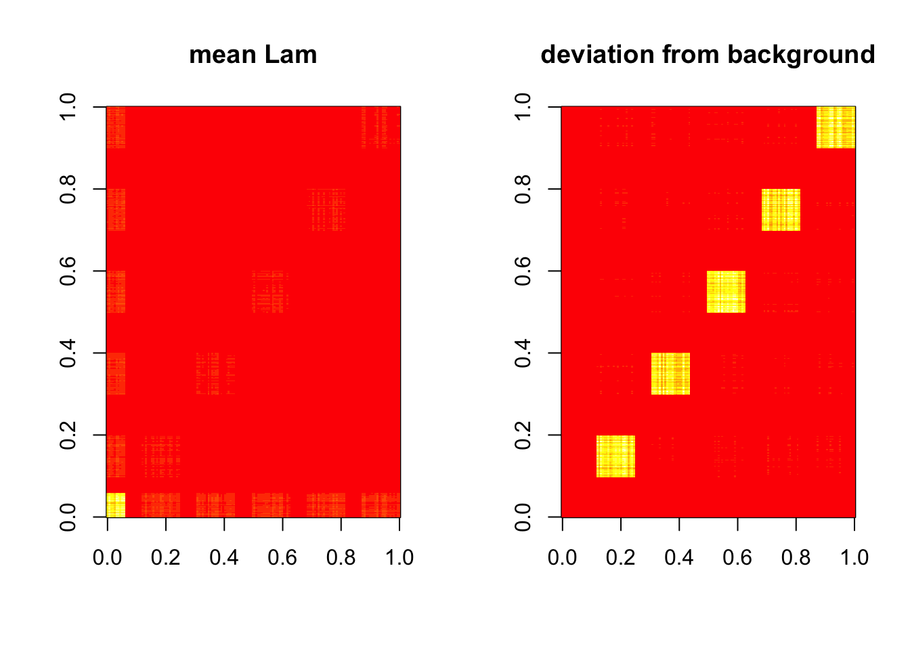
| Version | Author | Date |
|---|---|---|
| c2e2f10 | zihao12 | 2020-10-23 |
## note that the mean for "most frequent" block is still stronger
median(Lam[1:10, 1:10])[1] 528.9326median(Lam[topic1_doc, topic1_word])[1] 104.8489maxiter = 100
init_eb = initialize_qgl0f0w_from_l0f0LF.local(l0 = l0, f0 = f0, L = L, F = F)
init_mle = list(L = l0 * L, F = f0 * F)
fit_pmf = pmf(X = X, K = K, maxiter = maxiter, init = init_mle)
fit_ebpmf_wbg = ebpmf_wbg(X = X, K = K, maxiter = maxiter, init = init_eb)I plot the loglik for pmf; ELBO and E_loglik for ebpmf-wbg. Note that \(\text{ELBO} = \text{E-loglik} + \text{KL}\), so the KL divergence is the difference between ELBO and E_loglik.
loglik_mle = fit_pmf$log_liks
E_loglik_eb = fit_ebpmf_wbg$ELBO + fit_ebpmf_wbg$KL
ELBO_eb = fit_ebpmf_wbg$ELBO
ll_df <- data.frame(iter = 1:maxiter, loglik_mle = loglik_mle,
E_loglik_eb = E_loglik_eb, ELBO_eb = ELBO_eb, KL_eb = fit_ebpmf_wbg$KL)
plt = ggplot(data = ll_df)+
geom_line(aes(iter, loglik_mle, color = "loglik_mle")) +
geom_line(aes(iter, E_loglik_eb, color = "E_loglik_eb")) +
geom_line(aes(iter, ELBO_eb, color = "ELBO_eb"))+
ylab("progress")
print(plt)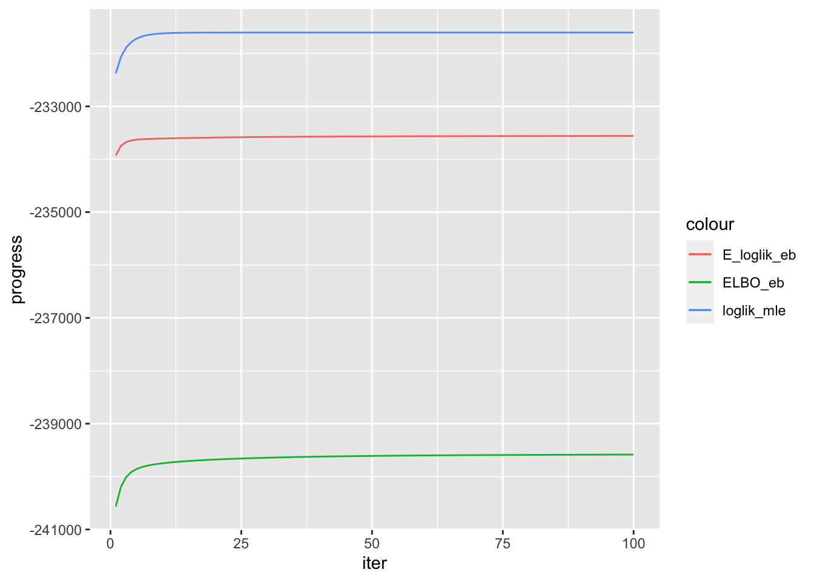
| Version | Author | Date |
|---|---|---|
| c2e2f10 | zihao12 | 2020-10-23 |
ll_df[maxiter,] iter loglik_mle E_loglik_eb ELBO_eb KL_eb
100 100 -231604.4 -233559.3 -239583.7 6024.309L_ebpmf_wbg = fit_ebpmf_wbg$qg$qls_mean
F_ebpmf_wbg = fit_ebpmf_wbg$qg$qfs_mean
w = fit_ebpmf_wbg$w
w[1] 0.9940006 0.9941600 1.0072140 0.9979528 0.9976648image(L_ebpmf_wbg %*% diag(w) %*% t(F_ebpmf_wbg), main = "fitted deviation from background")
| Version | Author | Date |
|---|---|---|
| c2e2f10 | zihao12 | 2020-10-23 |
par(mfrow = c(5,2))
for(k in 1:K){
plot(F[,k])
plot(F_ebpmf_wbg[,k])
}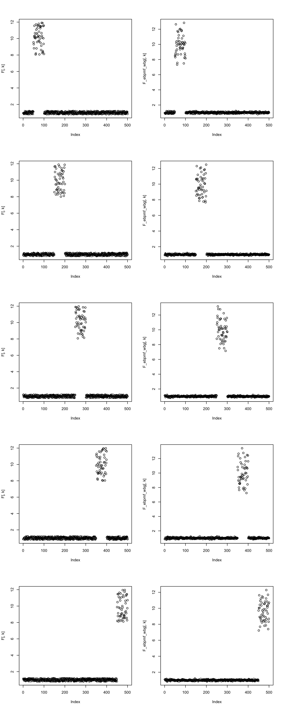
| Version | Author | Date |
|---|---|---|
| c2e2f10 | zihao12 | 2020-10-23 |
par(mfrow = c(5,2))
for(k in 1:K){
plot(L[,k])
plot(L_ebpmf_wbg[,k])
}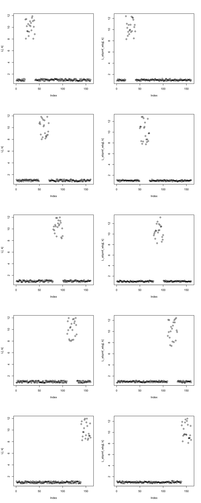
| Version | Author | Date |
|---|---|---|
| c2e2f10 | zihao12 | 2020-10-23 |
g_L, g_F## around 0.14 for phi = 10; 0.86 for phi = 0.0133 (each L[,k] has 0.13 top documents)
Pi_L = get_prior_summary(fit_ebpmf_wbg$qg$gls, return_matrix = TRUE)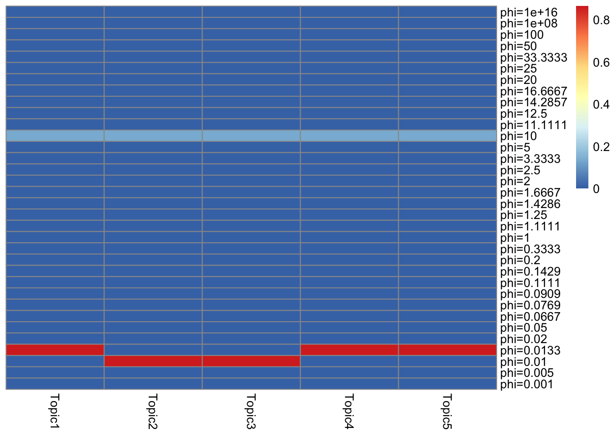
| Version | Author | Date |
|---|---|---|
| c2e2f10 | zihao12 | 2020-10-23 |
## around 0.1 for phi = 10, 0.9 for phi <= 0.013 (each F[,k] has 0.1 top words)
Pi_F = get_prior_summary(fit_ebpmf_wbg$qg$gfs, return_matrix = TRUE)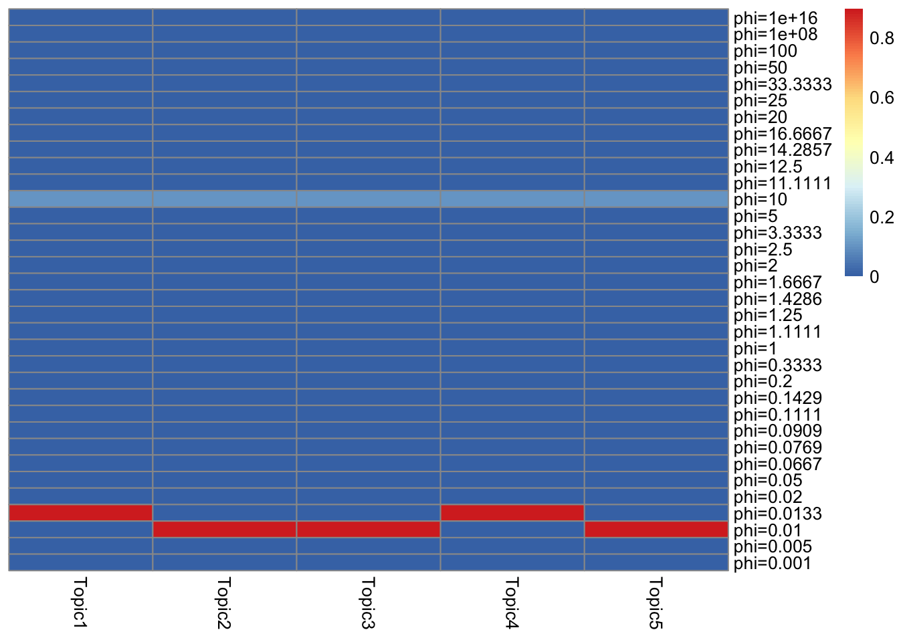
| Version | Author | Date |
|---|---|---|
| c2e2f10 | zihao12 | 2020-10-23 |
So \(\phi = 10\) corresponds to the larger deviation from mean, while \(\phi \approx 0.01\) corresponds to the rest that does not deviate much. The proportion is also right.
l0*L, f0*Frm(init_eb, init_mle, fit_ebpmf_wbg)
maxiter = 100
init_eb = initialize_qgl0f0w_from_LF.local(L = l0*L, F = f0*F)
fit_ebpmf_wbg = ebpmf_wbg(X = X, K = K, maxiter = maxiter, init = init_eb)I plot the loglik for pmf; ELBO and E_loglik for ebpmf-wbg. Note that \(\text{ELBO} = \text{E-loglik} + \text{KL}\), so the KL divergence is the difference between ELBO and E_loglik.
loglik_mle = fit_pmf$log_liks
E_loglik_eb = fit_ebpmf_wbg$ELBO + fit_ebpmf_wbg$KL
ELBO_eb = fit_ebpmf_wbg$ELBO
ll_df <- data.frame(iter = 1:maxiter, loglik_mle = loglik_mle,
E_loglik_eb = E_loglik_eb, ELBO_eb = ELBO_eb, KL_eb = fit_ebpmf_wbg$KL)
plt = ggplot(data = ll_df)+
geom_line(aes(iter, loglik_mle, color = "loglik_mle")) +
geom_line(aes(iter, E_loglik_eb, color = "E_loglik_eb")) +
geom_line(aes(iter, ELBO_eb, color = "ELBO_eb"))+
ylab("progress")
print(plt)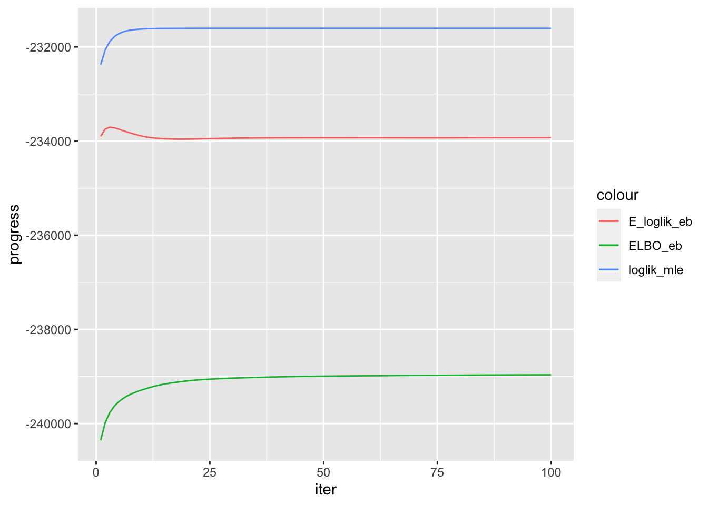
| Version | Author | Date |
|---|---|---|
| c2e2f10 | zihao12 | 2020-10-23 |
ll_df[maxiter,] iter loglik_mle E_loglik_eb ELBO_eb KL_eb
100 100 -231604.4 -233926 -238965.2 5039.257L_ebpmf_wbg = fit_ebpmf_wbg$qg$qls_mean
F_ebpmf_wbg = fit_ebpmf_wbg$qg$qfs_mean
w = fit_ebpmf_wbg$w
w[1] 0.9716017 0.9815895 0.9945534 0.9845687 0.9838028image(L_ebpmf_wbg %*% diag(w) %*% t(F_ebpmf_wbg), main = "fitted deviation from background")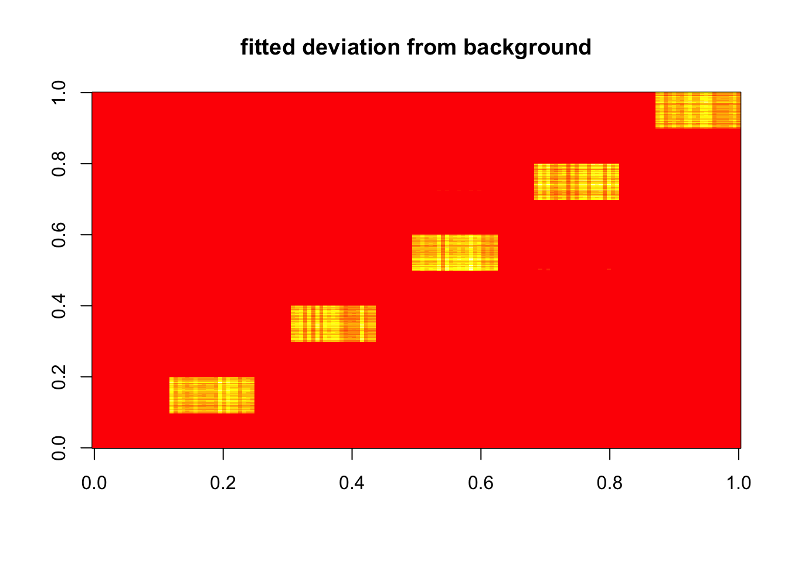
| Version | Author | Date |
|---|---|---|
| c2e2f10 | zihao12 | 2020-10-23 |
par(mfrow = c(5,2))
for(k in 1:K){
plot(F[,k])
plot(F_ebpmf_wbg[,k])
}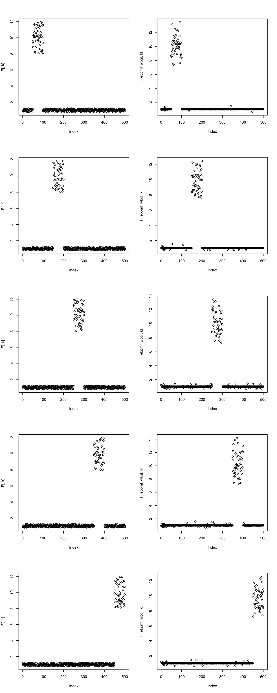
| Version | Author | Date |
|---|---|---|
| c2e2f10 | zihao12 | 2020-10-23 |
par(mfrow = c(5,2))
for(k in 1:K){
plot(L[,k])
plot(L_ebpmf_wbg[,k])
}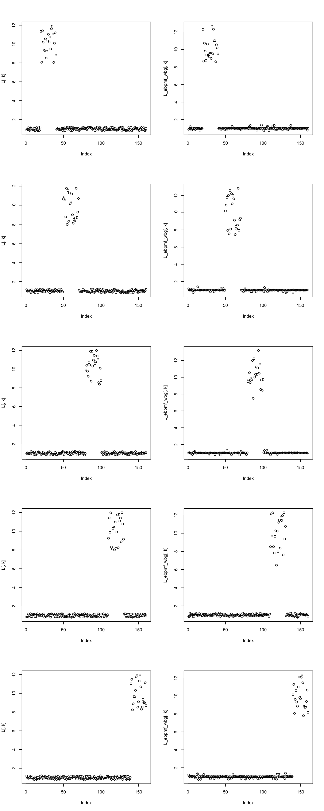
| Version | Author | Date |
|---|---|---|
| c2e2f10 | zihao12 | 2020-10-23 |
g_L, g_F## around 0.14 for phi = 1; 0.86 for phi <= 0.05 (each L[,k] has 0.13 top documents)
Pi_L = get_prior_summary(fit_ebpmf_wbg$qg$gls, return_matrix = TRUE)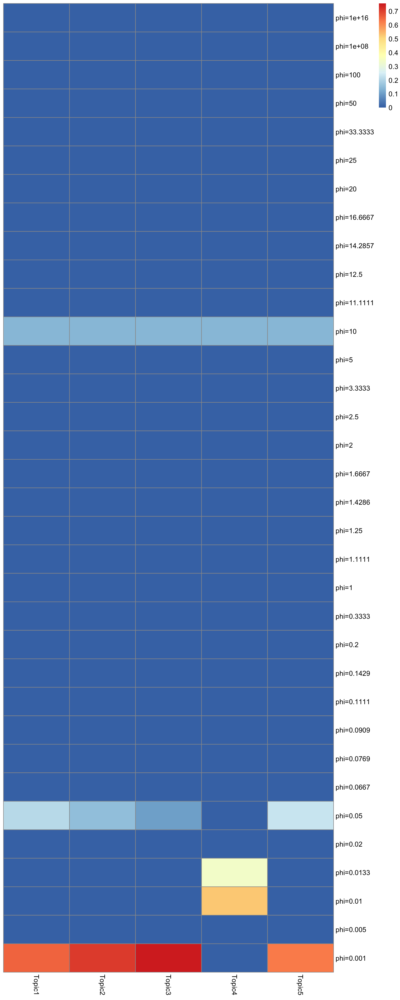
| Version | Author | Date |
|---|---|---|
| c2e2f10 | zihao12 | 2020-10-23 |
## around 0.11 for phi = 1, 0.89 for phi <= 0.05 (each F[,k] has 0.1 top words)
Pi_F = get_prior_summary(fit_ebpmf_wbg$qg$gfs, return_matrix = TRUE)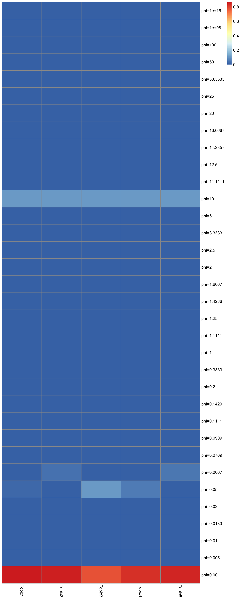
| Version | Author | Date |
|---|---|---|
| c2e2f10 | zihao12 | 2020-10-23 |
ELBO here is even slightly better than when we initialize with all the information l0, f0, L, Fl0 with row mean of l0*L(instead of row median used here), the result is very different: l0 captures some information supposedly in L, then both g and q are quite different.pmf fitsrm(init_eb, fit_ebpmf_wbg, fit_pmf)
maxiter = 100
fit_init = pmf(X = X, K = K, maxiter = 20, init = NULL)
L0 = fit_init$L; F0 = fit_init$F
init_eb = initialize_qgl0f0w_from_LF.local(L = L0, F = F0)
init_mle = list(L = L0, F = F0)
fit_pmf = pmf(X = X, K = K, maxiter = maxiter, init = init_mle)
fit_ebpmf_wbg = ebpmf_wbg(X = X, K = K, maxiter = maxiter, init = init_eb)loglik_mle = fit_pmf$log_liks
E_loglik_eb = fit_ebpmf_wbg$ELBO + fit_ebpmf_wbg$KL
ELBO_eb = fit_ebpmf_wbg$ELBO
ll_df <- data.frame(iter = 1:maxiter, loglik_mle = loglik_mle,
E_loglik_eb = E_loglik_eb, ELBO_eb = ELBO_eb, KL_eb = fit_ebpmf_wbg$KL)
plt = ggplot(data = ll_df)+
geom_line(aes(iter, loglik_mle, color = "loglik_mle")) +
geom_line(aes(iter, E_loglik_eb, color = "E_loglik_eb")) +
geom_line(aes(iter, ELBO_eb, color = "ELBO_eb"))+
ylab("progress")
print(plt)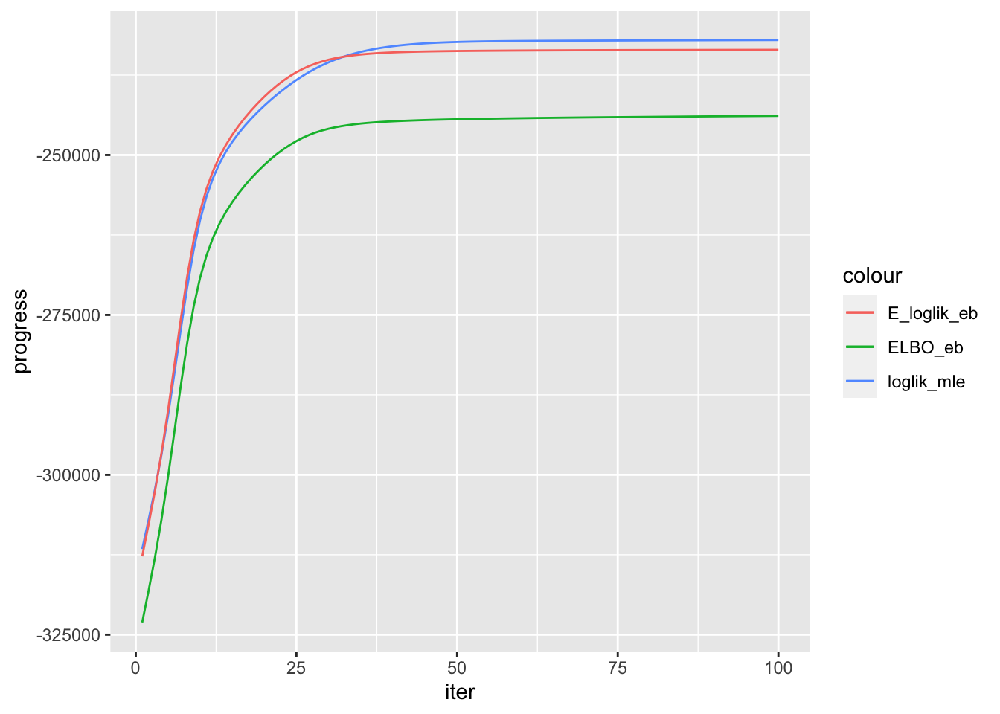
| Version | Author | Date |
|---|---|---|
| c2e2f10 | zihao12 | 2020-10-23 |
ll_df[maxiter,] iter loglik_mle E_loglik_eb ELBO_eb KL_eb
100 100 -232009.7 -233542.8 -243872.2 10329.4L_ebpmf_wbg = fit_ebpmf_wbg$qg$qls_mean
F_ebpmf_wbg = fit_ebpmf_wbg$qg$qfs_mean
w = fit_ebpmf_wbg$w
w[1] 0.6857842 1.2837935 1.3140876 1.4508431 1.2772258image(L_ebpmf_wbg %*% diag(w) %*% t(F_ebpmf_wbg), main = "fitted deviation from background")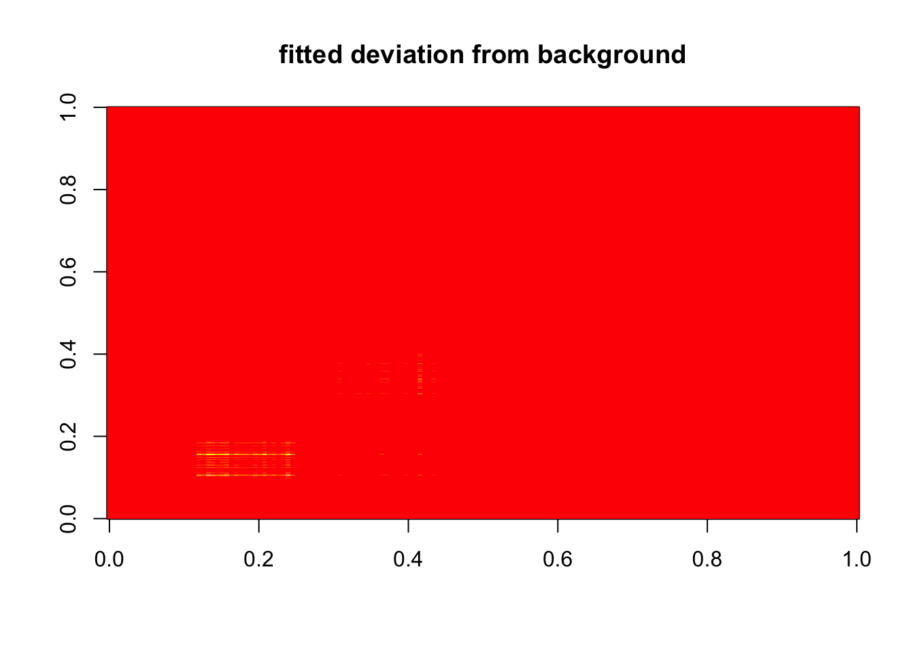
| Version | Author | Date |
|---|---|---|
| c2e2f10 | zihao12 | 2020-10-23 |
Compare l0, f0. Note that they do not change much during iterations, so their initialization is very important.
par(mfrow = c(2,3))
plot(l0)
plot(init_eb$l0)
plot(fit_ebpmf_wbg$l0)
plot(f0)
plot(init_eb$f0)
plot(fit_ebpmf_wbg$f0)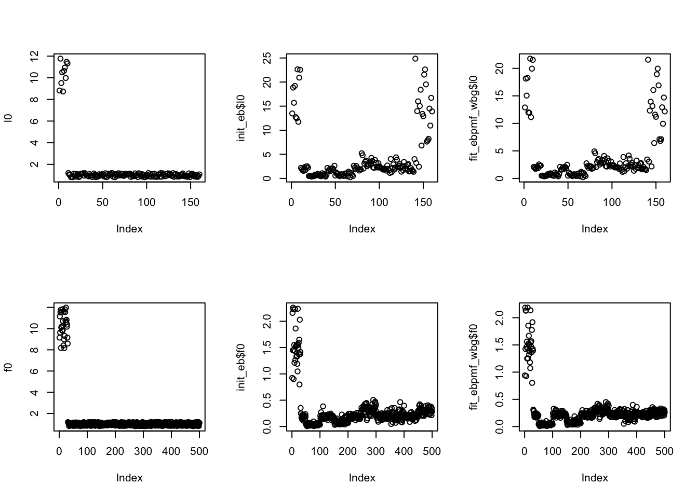
| Version | Author | Date |
|---|---|---|
| c2e2f10 | zihao12 | 2020-10-23 |
par(mfrow = c(5,2))
for(k in 1:K){
plot(F[,k])
plot(F_ebpmf_wbg[,k])
}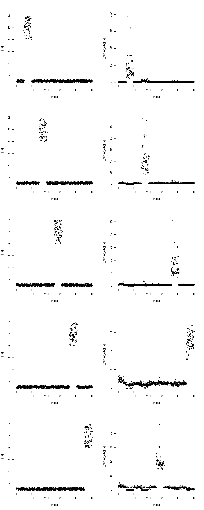
| Version | Author | Date |
|---|---|---|
| c2e2f10 | zihao12 | 2020-10-23 |
par(mfrow = c(5,2))
for(k in 1:K){
plot(L[,k])
plot(L_ebpmf_wbg[,k])
}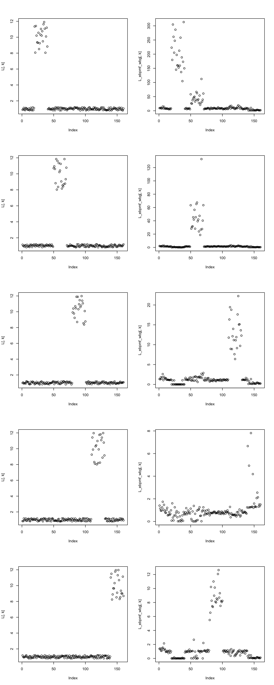
| Version | Author | Date |
|---|---|---|
| c2e2f10 | zihao12 | 2020-10-23 |
g_L, g_F## (each L[,k] has 0.13 top documents)
Pi_L = get_prior_summary(fit_ebpmf_wbg$qg$gls, return_matrix = TRUE)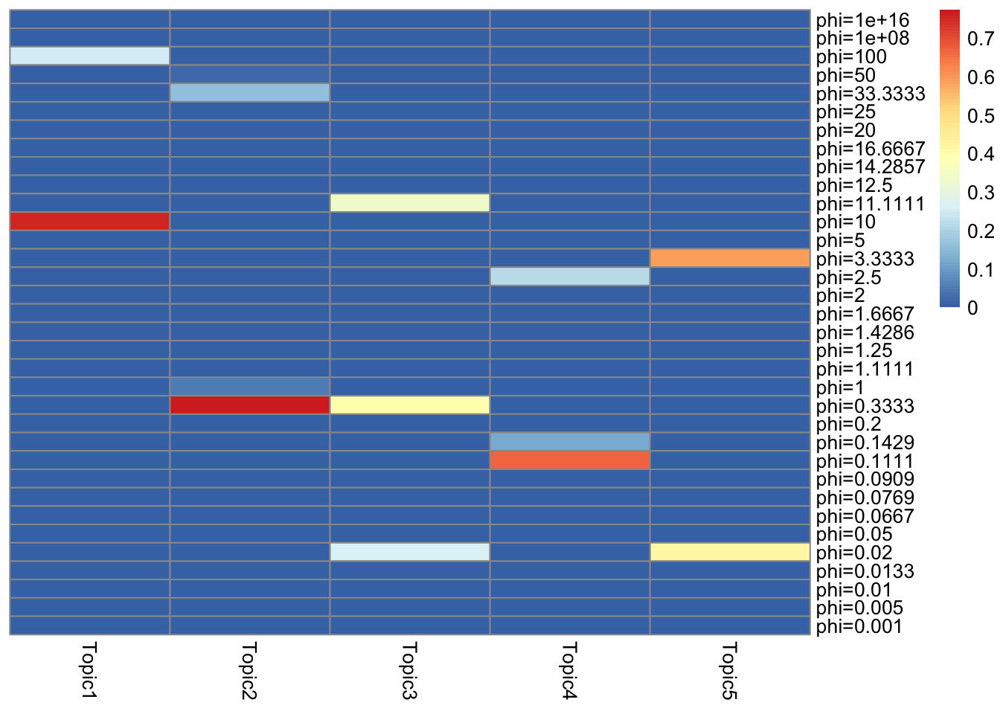
| Version | Author | Date |
|---|---|---|
| c2e2f10 | zihao12 | 2020-10-23 |
## (each F[,k] has 0.1 top words)
Pi_F = get_prior_summary(fit_ebpmf_wbg$qg$gfs, return_matrix = TRUE)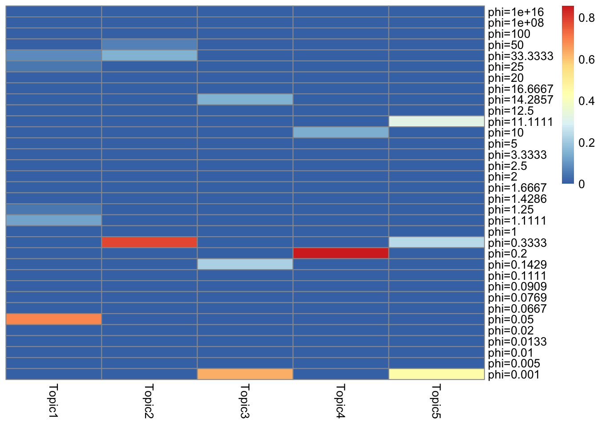
| Version | Author | Date |
|---|---|---|
| c2e2f10 | zihao12 | 2020-10-23 |
pmf fitsrm(init_eb, fit_ebpmf_wbg)
maxiter = 100
init_eb = initialize_qgl0f0w_from_LF.local(L = fit_pmf$L, F = fit_pmf$F)
fit_ebpmf_wbg = ebpmf_wbg(X = X, K = K, maxiter = maxiter, init = init_eb)loglik_mle = fit_pmf$log_liks
E_loglik_eb = fit_ebpmf_wbg$ELBO + fit_ebpmf_wbg$KL
ELBO_eb = fit_ebpmf_wbg$ELBO
ll_df <- data.frame(iter = 1:maxiter, loglik_mle = loglik_mle,
E_loglik_eb = E_loglik_eb, ELBO_eb = ELBO_eb, KL_eb = fit_ebpmf_wbg$KL)
plt = ggplot(data = ll_df)+
geom_line(aes(iter, loglik_mle, color = "loglik_mle")) +
geom_line(aes(iter, E_loglik_eb, color = "E_loglik_eb")) +
geom_line(aes(iter, ELBO_eb, color = "ELBO_eb"))+
ylab("progress")
print(plt)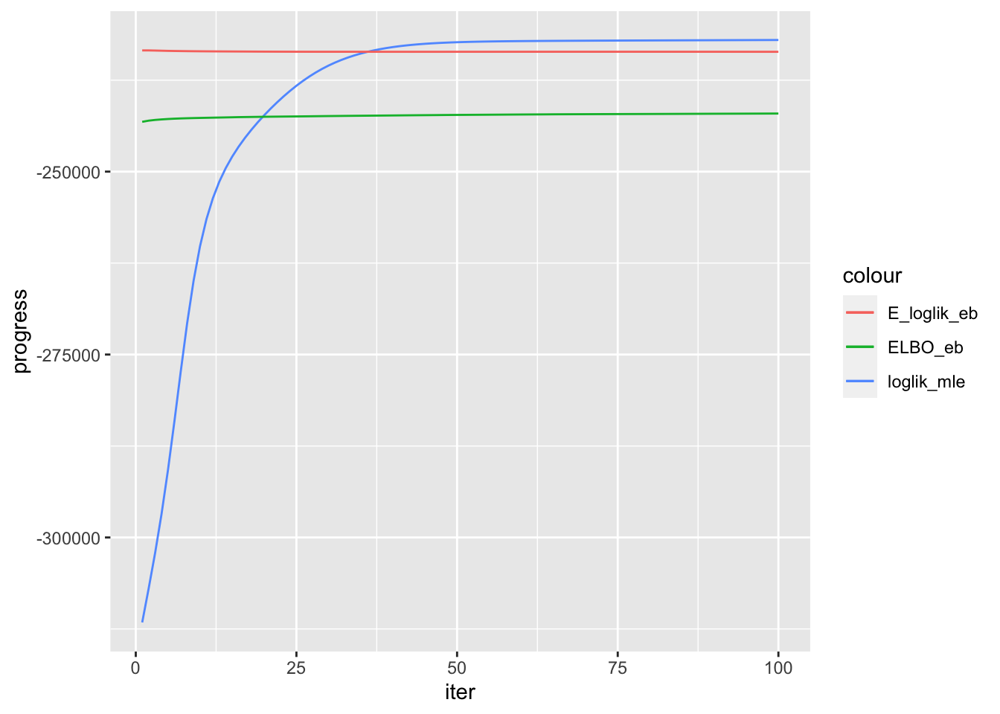
| Version | Author | Date |
|---|---|---|
| c2e2f10 | zihao12 | 2020-10-23 |
ll_df[maxiter,] iter loglik_mle E_loglik_eb ELBO_eb KL_eb
100 100 -232009.7 -233623.2 -242060.8 8437.511L_ebpmf_wbg = fit_ebpmf_wbg$qg$qls_mean
F_ebpmf_wbg = fit_ebpmf_wbg$qg$qfs_mean
w = fit_ebpmf_wbg$w
w[1] 1.0116468 0.9943095 0.9849368 0.9947326 0.9875975image(L_ebpmf_wbg %*% diag(w) %*% t(F_ebpmf_wbg), main = "fitted deviation from background")
| Version | Author | Date |
|---|---|---|
| c2e2f10 | zihao12 | 2020-10-23 |
par(mfrow = c(2,3))
plot(l0)
plot(init_eb$l0)
plot(fit_ebpmf_wbg$l0)
plot(f0)
plot(init_eb$f0)
plot(fit_ebpmf_wbg$f0)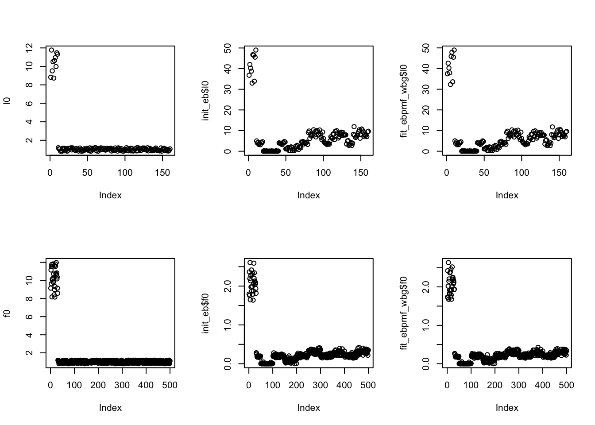
| Version | Author | Date |
|---|---|---|
| c2e2f10 | zihao12 | 2020-10-23 |
par(mfrow = c(5,2))
for(k in 1:K){
plot(F[,k])
plot(F_ebpmf_wbg[,k])
}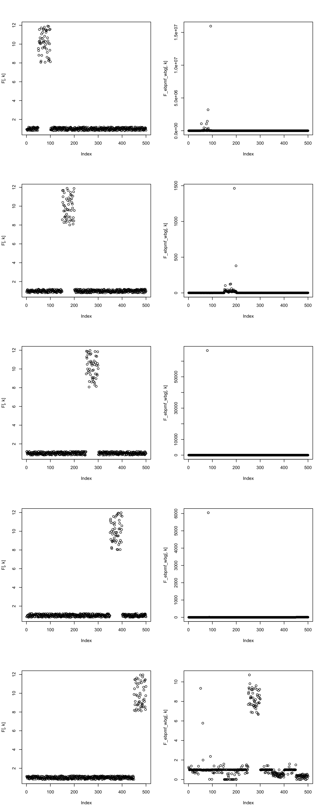
| Version | Author | Date |
|---|---|---|
| c2e2f10 | zihao12 | 2020-10-23 |
par(mfrow = c(5,2))
for(k in 1:K){
plot(L[,k])
plot(L_ebpmf_wbg[,k])
}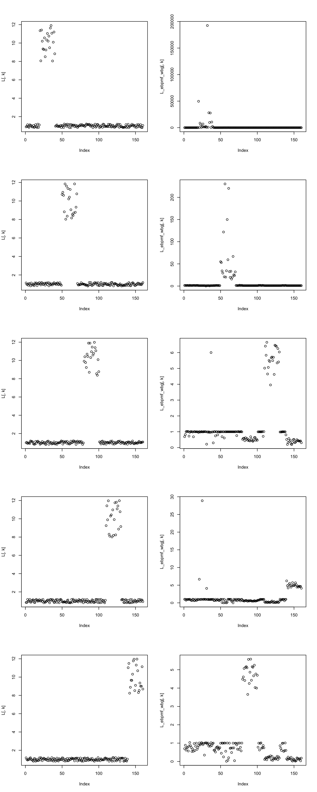
| Version | Author | Date |
|---|---|---|
| c2e2f10 | zihao12 | 2020-10-23 |
g_L, g_F## (each L[,k] has 0.13 top documents)
Pi_L = get_prior_summary(fit_ebpmf_wbg$qg$gls, return_matrix = TRUE)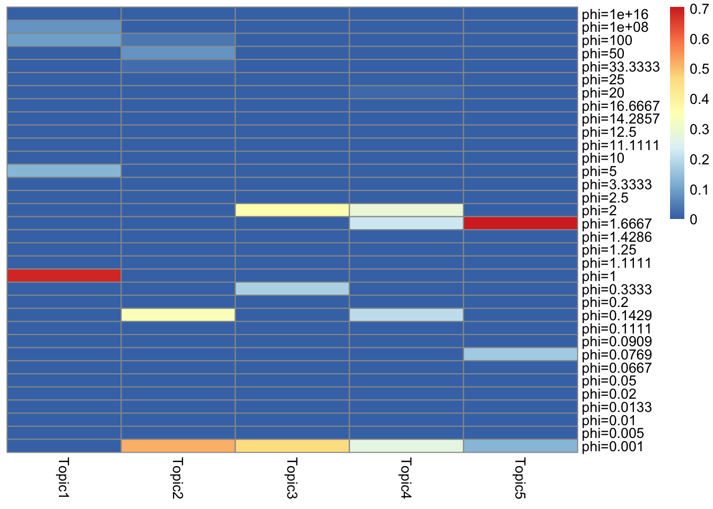
| Version | Author | Date |
|---|---|---|
| c2e2f10 | zihao12 | 2020-10-23 |
## (each F[,k] has 0.1 top words)
Pi_F = get_prior_summary(fit_ebpmf_wbg$qg$gfs, return_matrix = TRUE)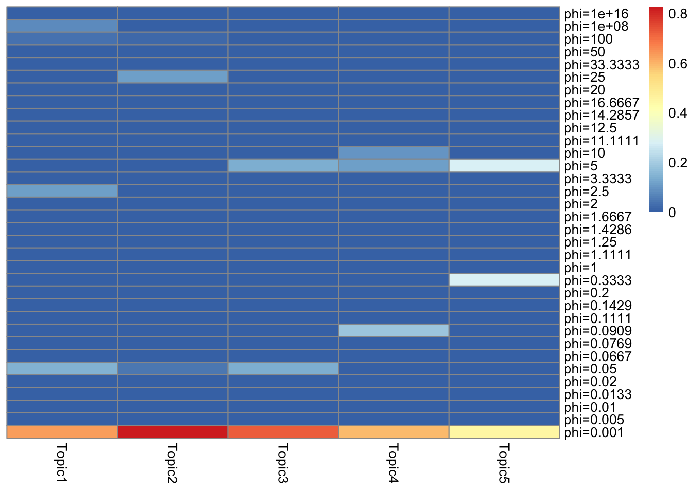
| Version | Author | Date |
|---|---|---|
| c2e2f10 | zihao12 | 2020-10-23 |
sessionInfo()R version 3.5.1 (2018-07-02)
Platform: x86_64-apple-darwin15.6.0 (64-bit)
Running under: macOS 10.15.7
Matrix products: default
BLAS: /Library/Frameworks/R.framework/Versions/3.5/Resources/lib/libRblas.0.dylib
LAPACK: /Library/Frameworks/R.framework/Versions/3.5/Resources/lib/libRlapack.dylib
locale:
[1] en_US.UTF-8/en_US.UTF-8/en_US.UTF-8/C/en_US.UTF-8/en_US.UTF-8
attached base packages:
[1] stats graphics grDevices utils datasets methods base
other attached packages:
[1] pheatmap_1.0.12 ggplot2_3.3.0 ebpmf.alpha_0.4.5 workflowr_1.6.2
loaded via a namespace (and not attached):
[1] Rcpp_1.0.5 RColorBrewer_1.1-2 compiler_3.5.1 pillar_1.4.4
[5] later_1.1.0.1 git2r_0.26.1 tools_3.5.1 digest_0.6.25
[9] evaluate_0.14 lifecycle_0.2.0 tibble_3.0.1 gtable_0.3.0
[13] lattice_0.20-38 pkgconfig_2.0.3 rlang_0.4.6 Matrix_1.2-17
[17] yaml_2.2.0 xfun_0.8 withr_2.2.0 dplyr_0.8.1
[21] stringr_1.4.0 knitr_1.28 vctrs_0.3.0 fs_1.3.1
[25] tidyselect_0.2.5 rprojroot_1.3-2 grid_3.5.1 glue_1.4.1
[29] R6_2.4.1 rmarkdown_2.1 mixsqp_0.3-46 irlba_2.3.3
[33] farver_2.0.3 purrr_0.3.4 magrittr_1.5 whisker_0.3-2
[37] backports_1.1.7 scales_1.1.1 promises_1.1.1 htmltools_0.5.0
[41] ellipsis_0.3.1 assertthat_0.2.1 colorspace_1.4-1 httpuv_1.5.4
[45] labeling_0.3 stringi_1.4.3 munsell_0.5.0 ebpm_0.0.1.2
[49] crayon_1.3.4
Comment
From plots of
l0,f0we can see that initialization ofl0,f0is very very important. They change very little, and have a huge impact on L, F. So next experiment I would start from the fits frompmfafter 100 iterations.